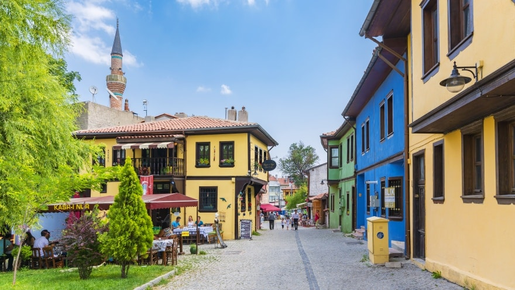

Odunpazarı Sokakları ve Atmosferi
Odunpazarı'nın Arnavut kaldırımlı sokaklarında dolaşmak, zamanda yolculuk yapmak gibidir. Restore edilmiş tarihi konaklar, butik oteller, kafeler, sanat atölyeleri ve müzelerle doludur. Her köşe başında farklı bir güzellik sizi bekler.
Bölge, fotoğraf tutkunları için eşsiz manzaralar sunar. Özellikle gün batımında evlerin aldığı renkler görülmeye değerdir.